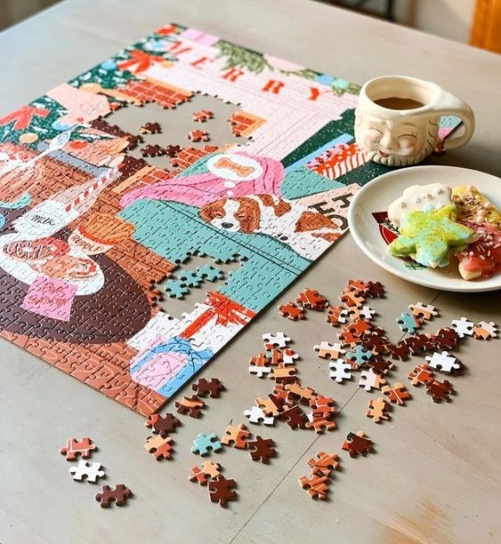
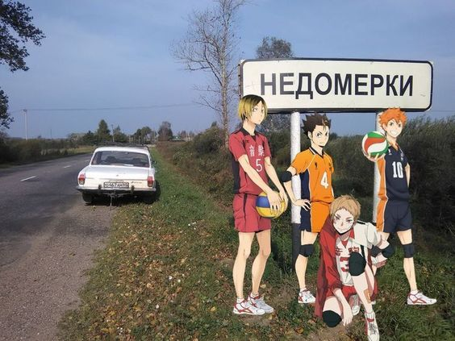
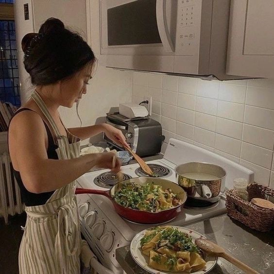
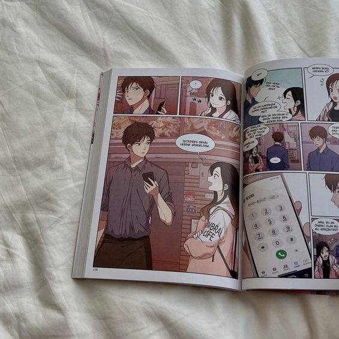
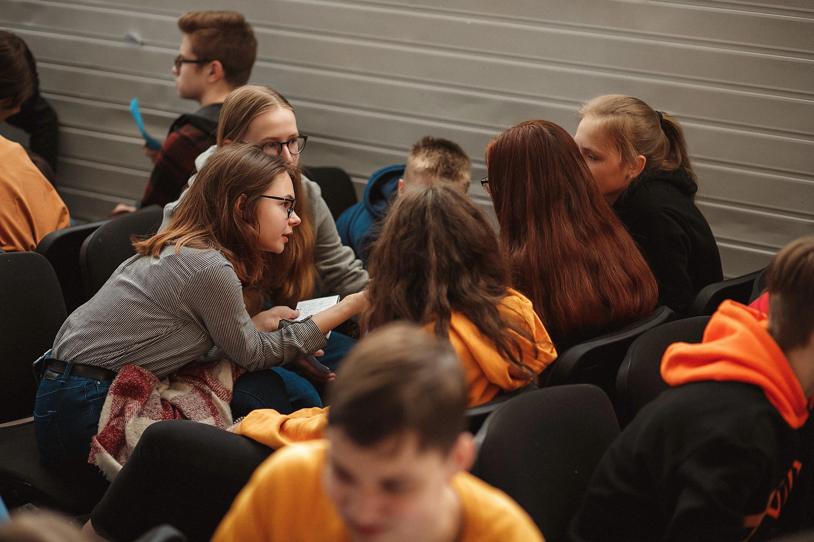

О себе
Всем привет! Меня зовут Юля (aka Vita Volkova aka grasokol aka michellle9101) и добро пожаловать на мой сайт! На данный момент я живу в городе Минск (Беларусь) и обучаюсь на третьем курсе специальности "Управление информационными ресурсами" (aka "да я экономисточка" aka "вообще-то, я учила computer science" aka "по образованию я управленица").
Моя мечта - научиться без посторонней помощи делать "взрослые звонки" для того, чтобы получить какую-то информацию, оформить заказ или бронь. Мой девиз по жизни: "The best thing about being alive is that sometimes there's a cat".
Мои хобби
-

Сбор пазлов прекрасно подходит для расслабления и тренировки внимания. За этим занятием я могу не заметить как пройдёт 10 часов без еды и движения. Я увлекаюсь пазлами уже много лет, и за это время у меня скопилась приличная коллекция. Поэтому моё окружение знает, что, если не хочется ломать голову над подарком для меня, всегда можно подарить пазлы. Мои любимые производители - "Trefl" и "Piece & Love Puzzles"))
-

Видеоигры - ещё один замечательный способ увлекательно проводить время. Я не слишком большая фанатка однотипных скилл-зависимых игр, а вот красивые бродилки - это мы заглянем под каждый камень, интерактивное кино - поплачем над смертями второстепенных персонажей, красочный кооп с кучей механик - не распрощаемся, пока не выбьем платину. П.с. Спустя 5 лет использования паленых контроллеров, так и не было выявлено причин покупать реговые.
-

Волейбол - это отличный способ оставаться активной и здоровой. Под видом веселой игры с любимой командой вы получаете полноценную кардио тренировку, ведь здесь важно всё: внимательность, реакция, гибкость, специальные навыки, силовые показатели, скорость. Доказано, что командные игры на свежем воздухе помогают избавиться от физических и ментальных проблем. Так что все на волейбол!!!
-

Готовка еды - пошаговый медитативный процесс, который к тому же приводит к приятным результатам. Существует всего два правила. "Побольше сыра", если блюдо солёное, и "побольше крема", если оно сладкое.
-
Просмотр аниме - это целый мир приключений и эмоций, который увлекает и вдохновляет. Каждый может найти что-то на свой вкус! Я смотрю аниме примерно с 2014-го года и за всё это время так и не посморела ни одной серии "Наруто". Вопросы?
-

Перевод манги. Я состою в команде из трёх человек, которая занимается перводом манги и манхвы на русский язык (да, мы пираты). В основном я работаю как клинер и редактор перевода. Скорее всего, у меня есть проф. деформация, связанная с редактурой текста, и именно поэтому я так мучила свою команду по ГМРПО, когда дело доходило до составления отчётов. Простите!
-

Спортивный "ЧГК". Около четырех лет я играла в командные интеллектуальные игры (напрмер, "Что? Где? Когда?", "Брейн-ринг", "Своя игра" и т.д.) спортивного формата (варианты, которые можно увидеть по телевидению, называются "показательными"). После перезда в Минск я почти полность отказалась от этого хобби, о чём сильно жалею и надеюсь, что в будущем смогу исправить ситуацию :(
Мои профили